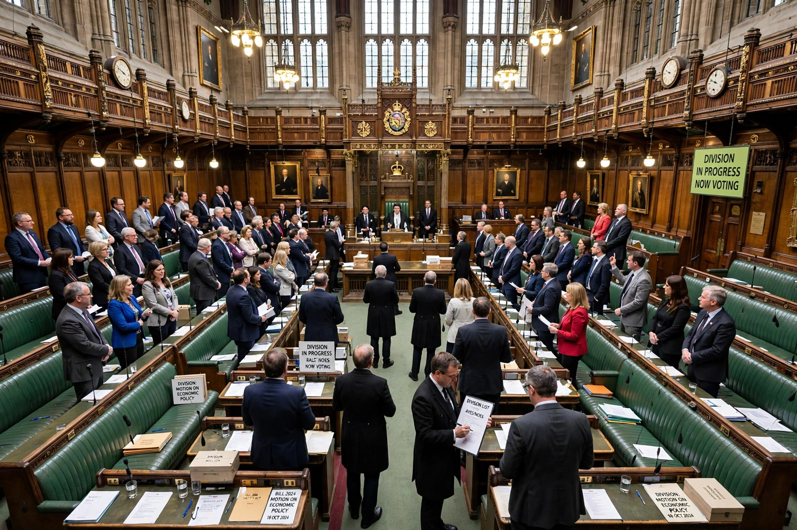

Party discipline
Party discipline is the ability of a parliamentary group of a political party to get its members to support the policies of their party leadership. In liberal democracies, it usually refers to the control that party leaders have over their legislature members, and the ability to ensure that they vote together in the legislature.
Party discipline tends to be stronger in parliamentary systems, where a government can fall if it loses a vote in the legislature, than in presidential systems such as that of the United States, where legislators are freer to vote against their party.

Mechanisms
Party discipline is enforced through a variety of mechanisms. The most formal is the whip system, in which party officials known as whips communicate the party line to legislators and monitor their voting. In Westminster systems, votes are classified by importance: a "three-line whip" indicates a vote on which the party demands attendance and support, and defying it can lead to serious sanctions.
Sanctions for breaking discipline can include:
- Withdrawal of the whip, effectively expelling the member from the parliamentary party
- Deselection at the next election
- Loss of committee positions or frontbench roles
- Denied promotion to ministerial office
Variations by country
Westminster systems
In the United Kingdom, party discipline is traditionally very strong. Members of Parliament are expected to vote with their party on virtually all whipped votes. A free vote, in which members may vote according to their conscience, is granted only on certain moral or ethical questions.
United States
In the United States Congress, party discipline is comparatively weaker, because legislators are elected individually, raise their own campaign funds, and cannot be removed by party leadership. Nevertheless, party unity voting has increased markedly since the late twentieth century as the parties have become more ideologically sorted.
Canada and Australia
Canada is noted for particularly strict party discipline, with members rarely voting against their party. In Australia, the Labor Party binds its members through a formal pledge, while Liberal Party members have somewhat more freedom.
Criticism
Critics argue that strong party discipline reduces legislators to voting machines, weakens the deliberative function of parliament, and concentrates power in party leadership. Defenders respond that discipline allows voters to know what a party stands for and enables governments to carry out the programme on which they were elected.
See also
Categories: Political parties | Parliamentary procedure | Political terminology